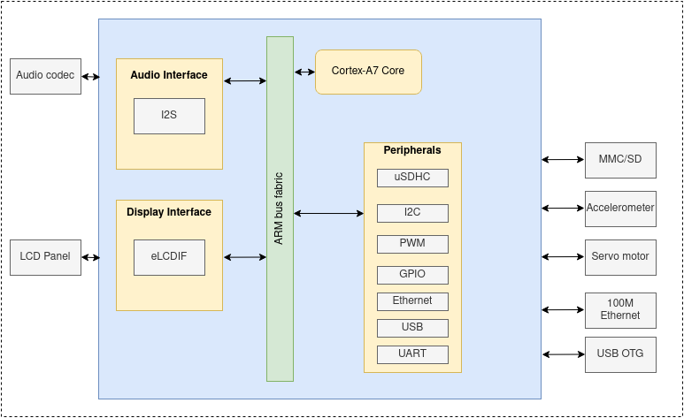
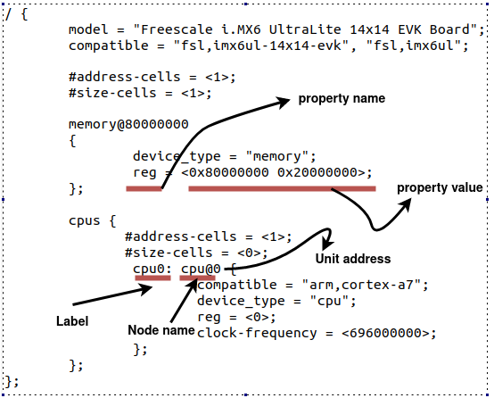

SO2 实验 11——ARM 内核开发¶
实验目标¶
- 初步了解片上系统（SoC）
- 熟悉使用 ARM 作为支持架构的嵌入式世界
- 理解什么是板级支持包（BSP）
- 使用 i.MX6UL 平台作为示例，编译和引导 ARM 内核
- 熟悉使用设备树进行硬件描述
片上系统¶
片上系统 (SoC) 是一块集成电路 (IC)，整个系统都集成在上面。通常在 SoC 上可以找到的组件，包括中央处理单元 (CPU)、内存、输入/输出端口、存储设备，以及更复杂的模块，如音频数字接口、神经处理单元 (NPU) 或图形处理单元 (GPU)。
SoC 可用于各种应用领域，最常见的包括： - 消费电子产品（电视机、手机、游戏机） - 工业计算机（医学成像等） - 汽车 - 家用电器
SoC 的主要架构是 ARM。值得一提的是，还有基于 x86 的 SoC 平台。我们还需要关注 RISC-V，这是一种开放的标准指令集架构。
下图展示了 ARM 平台的简化视图：
我们将以 NXP 的 i.MX6UL 平台作为参考平台，但通常所有的 SoC 都包含以下构建模块：
下图是 i.MX6UL 平台的完整框图：

i.MX6UL 评估套件板的外观如下：

其他流行的 SoC 开发板包括：
板级支持软件包¶
板级支持软件包（BSP）是支持演示特定硬件平台的功能的情况下，最小的一组软件包。这包括：
- 工具链
- 引导加载程序
- Linux 内核映像、设备树文件和驱动程序
- 根文件系统
半导体制造商通常会提供一个评估板和相应的 BSP。BSP 通常使用 Yocto 进行打包。
工具链¶
由于我们的开发机主要基于 x86 架构，我们需要交叉编译器，这样可以生成针对 ARM 平台的可执行代码。
我们可以使用 https://crosstool-ng.github.io/ 从头开始构建自己的交叉编译器，或者我们可以安装一个
$ sudo apt-get install gcc-arm-linux-gnueabihf g++-arm-linux-gnueabihf # 用于 arm32
$ sudo apt-get install gcc-aarch64-linux-gnu g++-aarch64-linux-gnu # 用于 arm64
根据配置，有几个工具链二进制文件可用：
- 对于“arm-eabi-gcc”，你有 Linux 系统 C 库，该库将调用内核的 IOCTL，例如为进程分配内存页面。
- 对于“arm-eabi-none-gcc”，你运行在没有任何操作系统的平台上，所以 C 库与之不同。
编译 ARM 版 Linux 内核¶
为 32 位 ARM 板编译内核：
# 根据你的平台选择 defconfig
$ ARCH=arm CROSS_COMPILE=arm-linux-gnueabihf- make imx_v6_v7_defconfig
# 编译内核
$ ARCH=arm CROSS_COMPILE=arm-linux-gnueabihf- make -j8
为 64 位 ARM 板编译内核：
# 对于 64 位 ARM，有一个适用于所有支持的板的单个配置
$ ARCH=arm CROSS_COMPILE=arm-linux-gnueabihf- make defconfig
# 编译内核
$ ARCH=arm64 CROSS_COMPILE=aarch64-linux-gnu- make -j8
Linux 内核镜像¶
内核镜像二进制文件被命名为 vmlinux，可以在内核树的根目录下找到。用于引导的压缩镜像可以在以下位置找到：
arch/arm/boot/Image，适用于 arm32arch/arm64/boot/Image，适用于 arm64
$ file vmlinux
vmlinux: ELF 32-bit LSB executable, ARM, EABI5 version 1 (SYSV), statically linked, not stripped
$ file vmlinux
vmlinux: ELF 64-bit LSB shared object, ARM aarch64, version 1 (SYSV), statically linked, not stripped
Rootfs¶
根文件系统 (rootfs) 是挂载在文件层次结构顶部 (/) 的文件系统。它应该至少包含允许系统引导到某个 shell 的关键文件。
root@so2$ tree -d -L 2
├── bin
├── boot
├── dev
├── etc
├── home
│ └── root
├── lib
│ └── udev
├── mnt
├── proc
├── sbin
│ └── init
├── sys
├── usr
│ ├── bin
│ ├── include
│ ├── lib
└── var
对于 x86，我们将使用 Yocto rootfs 镜像。为了下载 arm32 的 ext4 rootfs 镜像，需要运行以下命令：
$ cd tools/labs/
$ ARCH=arm make core-image-minimal-qemuarm.ext4
设备树¶
设备树 (DT) 是一种用于描述系统中硬件设备的树状结构。树中的每个节点描述一个设备，因此这些节点被称为 设备节点。之引入设备树，是为了提供一种发现不可发现硬件的方式（例如，I2C 总线上的设备）。此前，这些信息是存储在 Linux 内核的源代码中的。这意味着每当我们需要修改某个设备的节点时，都需要重新编译内核。现在情况已经改变，因为设备树和内核镜像是独立的二进制文件。
设备树以设备树源文件 (.dts) 的形式存储，并编译成设备树二进制文件 (.dtb)。
# 编译 dtbs
$ make dtbs
# arm32 设备树源文件位置
$ ls arch/arm/boot/dts/
imx6ul-14x14-evk.dtb imx6ull-14x14-evk.dtb bcm2835-rpi-a-plus.dts
# arm64 设备树源文件位置
$ ls arch/arm64/boot/dts/<vendor>
imx8mm-evk.dts imx8mp-evk.dts
下面的图片是简单的设备树示例，描述了板型、CPU 和内存。
请注意，可以使用 label: name@address 来定义设备树节点：
label，用于从其他位置引用该节点的标识符name，节点标识符address，用于区分具有相同名称（name）的节点。
节点可以包含多个以 name = value 格式排列的属性。name 是一个字符串，value 可以是字节、字符串或字符串数组。
以下是一个示例：
/ {
node@0 {
empty-property;
string-property = "string value";
string-list-property = "string value 1", "string value 2";
int-list-property = <value1 value2>;
child-node@0 {
child-empty-property;
child-string-property = "string value";
child-node-reference = <&child-node1>;
};
child-node1: child-node@1 {
child-empty-property;
child-string-property = "string value";
};
};
};
Qemu¶
我们将使用 qemu-system-arm 启动 32 位 ARM 平台。虽然可以从官方发行版仓库中安装，例如：
sudo apt-get install -y qemu-system-arm
我们依然强烈推荐从源代码构建最新版本的 qemu-system-arm：
$ git clone https://gitlab.com/qemu-project/qemu.git
$ ./configure --target-list=arm-softmmu --disable-docs
$ make -j8
$ ./build/qemu-system-arm
练习¶
重要
要解决练习，你需要执行以下步骤：
- 用模板来准备骨架
- 构建模块
- 将模块复制到虚拟机
- 启动虚拟机并在虚拟机中测试模块。
当前实验名称为 ARM 内核开发。请参阅任务名称的练习。
骨架代码是从位于 tools/labs/templates 的完整源代码示例中生成的。要解决任务，首先要为所有实验生成骨架代码：
tools/labs $ make clean
tools/labs $ LABS=<lab name> make skels
你还可以使用以下命令为单个任务生成骨架代码：
tools/labs $ LABS=<lab name>/<task name> make skels
生成骨架驱动程序后，构建源代码：
tools/labs $ make build
然后，复制模块并启动虚拟机：
tools/labs $ make copy
tools/labs $ make boot
模块将放置在 /home/root/skels/ARM 内核开发/<task_name> 目录中。
或者，我们可以通过 scp 命令复制文件，以避免重新启动虚拟机。有关通过网络连接到虚拟机的详细信息，请参阅 连接到虚拟机。
请查看 练习 部分以获取更详细的信息。
警告
在开始练习或生成骨架之前，请在 Linux 仓库中运行 git pull 命令，以确保你拥有最新版本的练习。
如果你有本地更改，pull 命令将失败。使用 git status 检查本地更改。如果要保留更改，在 pull 之前运行 git stash，之后运行 git stash pop。要放弃更改，请运行 git reset --hard master。
如果你在 git pull 之前已经生成了骨架，你需要再次生成骨架。
警告
以下是针对 ARM 虚拟机操作的新规则
# 模块构建
tools/labs $ ARCH=arm CROSS_COMPILE=arm-linux-gnueabihf- make build
# 模块拷贝
tools/labs $ ARCH=arm make copy
# 内核构建
$ ARCH=arm CROSS_COMPILE=arm-linux-gnueabihf- make -j8
0. 简介¶
检查 Linux 内核代码中以下位置，并识别使用 ARM 架构的平台和供应商：
- 32位:
arch/arm/boot/dts- 64位:
arch/arm64/boot/dts
使用 qemu 查看支持的平台：
../qemu/build/arm-softmmu/qemu-system-arm -M ?
注解
我们使用了自己编译的 arm32 版本的 Qemu。有关详细信息，请参见 Qemu 部分。
1. 启动¶
使用 qemu 启动 i.MX6UL 平台。为了启动，我们首先需要编译内核。请查看 编译 ARM 版 Linux 内核 部分。
成功编译将生成以下二进制文件：
arch/arm/boot/Image，针对 ARM 架构编译的内核镜像arch/arm/boot/dts/imx6ul-14x14-evk.dtb，适用于i.MX6UL开发板的设备树二进制文件
请查看 Rootfs 部分，并下载 core-image-minimal-qemuarm.ext4 根文件系统。然后使用以下命令运行 qemu：
../qemu/build/arm-softmmu/qemu-system-arm -M mcimx6ul-evk -cpu cortex-a7 -m 512M \
-kernel arch/arm/boot/zImage -nographic -dtb arch/arm/boot/dts/imx6ul-14x14-evk.dtb \
-append "root=/dev/mmcblk0 rw console=ttymxc0 loglevel=8 earlycon printk" -sd tools/labs/core-image-minimal-qemuarm.ext4
注解
Qemu 对 LCDIF 和 ASRC 设备的支持不够完善。请从编译中移除它们。
$ ARCH=arm CROSS_COMPILE=arm-linux-gnueabihf- make menuconfig
# 设置 FSL_ASRC=n 和 DRM_MXSFB=n
$ ARCH=arm CROSS_COMPILE=arm-linux-gnueabihf- make -j8
内核启动后，请检查内核版本和 CPU 信息：
$ cat /proc/cpuinfo
$ cat /proc/version
2. CPU 信息¶
检查 NXP i.MX6UL 开发板的 CPU 配置。从 arch/arm/boot/dts/imx6ul-14x14-evk.dts 开始。
- 找到
cpu@0设备树节点，并查找operating-points属性。- 读取处理器可以运行的最大和最小操作频率
$ cat /sys/devices/system/cpu/cpu0/cpufreq/cpuinfo_min_freq $ cat /sys/devices/system/cpu/cpu0/cpufreq/cpuinfo_max_freq
3. I/O 内存¶
检查 NXP i.MX6UL 开发板的 I/O 空间配置。从 arch/arm/boot/dts/imx6ul-14x14-evk.dts 开始，并确定下面提到的每个设备。
$ cat /proc/iomem
00900000-0091ffff : 900000.sram sram@900000
0209c000-0209ffff : 209c000.gpio gpio@209c000
021a0000-021a3fff : 21a0000.i2c i2c@21a0000
80000000-9fffffff : System RAM
识别与以下设备对应的设备树节点：
System RAM，在arch/arm/boot/dts/imx6ul-14x14-evk.dtsi中查找memory@80000000节点。系统 RAM 的大小是多少？GPIO1，在arch/arm/boot/dts/imx6ul.dtsi中查找gpio@209c000节点。该设备的 I/O 空间大小是多少？I2C1，在arch/arm/boot/dts/imx6ul.dtsi中查找i2c@21a0000节点。该设备的 I/O 空间大小是多少？
4. Hello World¶
实现一个简单的内核模块，在加载和卸载时打印一条消息。编译该模块并加载到 i.MX6UL 模拟平台上。
# 模块构建
tools/labs $ ARCH=arm CROSS_COMPILE=arm-linux-gnueabihf- make build
# 模块复制
tools/labs $ ARCH=arm make copy
# 内核构建
$ ARCH=arm CROSS_COMPILE=arm-linux-gnueabihf- make -j8
5. 简单设备¶
为一个简单的平台设备实现一个驱动程序。找到 TODO 1，注意如何声明并注册 simple_driver 作为平台驱动程序。按照 TODO 2，在 simple_device_ids 数组中添加 so2,simple-device-v1 和 so2,simple-device-v2 兼容字符串。
在 arch/arm/boot/dts/imx6ul.dtsi 的 soc 节点下创建两个设备树节点，分别使用兼容字符串 so2,simple-device-v1 和 so2,simple-device-v2。然后观察加载 simple_driver 模块时的行为。